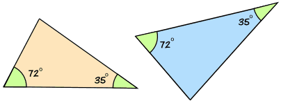
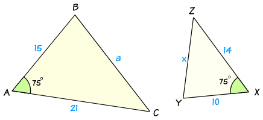
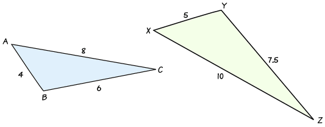

How to Find if Triangles are Similar
Two triangles are similar if they have:
- all their angles equal
- corresponding sides are in the same ratio
But we don't need to know all three sides and all three angles ...two or three out of the six is usually enough.
There are three ways to find if two triangles are similar: AA, SAS and SSS:
AA
AA stands for "angle, angle" and means that the triangles have two of their angles equal.
If two triangles have two of their angles equal, the triangles are similar.
Example: these two triangles are similar:

If two of their angles are equal, then the third angle must also be equal, because angles of a triangle always add to make 180°.
In this case the missing angle is 180° − (72° + 35°) = 73°
So AA could also be called AAA (because when two angles are equal, all three angles must be equal).
SAS
SAS stands for "side, angle, side" and means that we have two triangles where:
- the ratio between two sides is the same as the ratio between another two sides
- and we we also know the included angles are equal.
If two triangles have two pairs of sides in the same ratio and the included angles are also equal, then the triangles are similar.
Example:

In this example we can see that:
- one pair of sides is in the ratio of 21 : 14 = 3 : 2
- another pair of sides is in the ratio of 15 : 10 = 3 : 2
- there is a matching angle of 75° in between them
So there is enough information to tell us that the two triangles are similar.
Using Trigonometry
We could also use Trigonometry to calculate the other two sides using the Law of Cosines:
Example Continued
In Triangle ABC:
- a2 = b2 + c2 - 2bc cos A
- a2 = 212 + 152 - 2 × 21 × 15 × Cos75°
- a2 = 441 + 225 - 630 × 0.2588...
- a2 = 666 - 163.055...
- a2 = 502.944...
- So a = √502.94 = 22.426...
In Triangle XYZ:
- x2 = y2 + z2 - 2yz cos X
- x2 = 142 + 102 - 2 × 14 × 10 × Cos75°
- x2 = 196 + 100 - 280 × 0.2588...
- x2 = 296 - 72.469...
- x2 = 223.530...
- So x = √223.530... = 14.950...
Now let us check the ratio of those two sides:
a : x = 22.426... : 14.950... = 3 : 2
the same ratio as before!
Note: we can also use the Law of Sines to show that the other two angles are equal.
SSS
SSS stands for "side, side, side" and means that we have two triangles with all three pairs of corresponding sides in the same ratio.
If two triangles have three pairs of sides in the same ratio, then the triangles are similar.
Example:

In this example, the ratios of sides are:
- a : x = 6 : 7.5 = 12 : 15 = 4 : 5
- b : y = 8 : 10 = 4 : 5
- c : z = 4 : 5
These ratios are all equal, so the two triangles are similar.
Using Trigonometry
Using Trigonometry we can show that the two triangles have equal angles by using the Law of Cosines in each triangle:
In Triangle ABC:
- cos A = (b2 + c2 - a2)/2bc
- cos A = (82 + 42 - 62)/(2× 8 × 4)
- cos A = (64 + 16 - 36)/64
- cos A = 44/64
- cos A = 0.6875
- So Angle A = 46.6°
In Triangle XYZ:
- cos X = (y2 + z2 - x2)/2yz
- cos X = (102 + 52 - 7.52)/(2× 10 × 5)
- cos X = (100 + 25 - 56.25)/100
- cos X = 68.75/100
- cos X = 0.6875
- So Angle X = 46.6°
So angles A and X are equal!
Similarly we can show that angles B and Y are equal, and angles C and Z are equal.